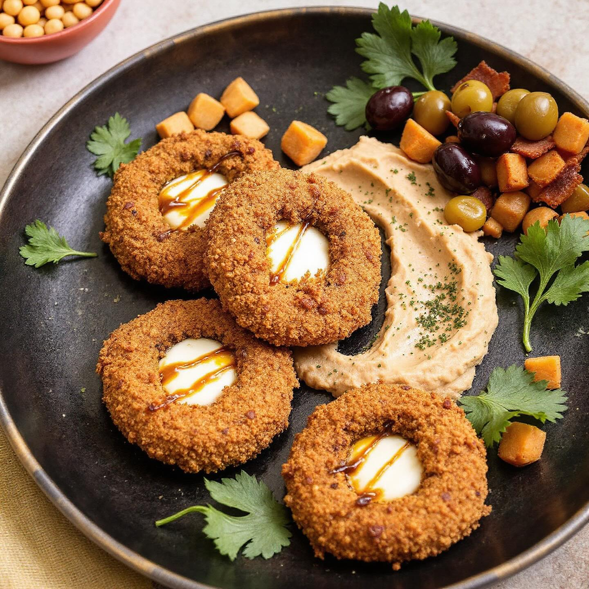
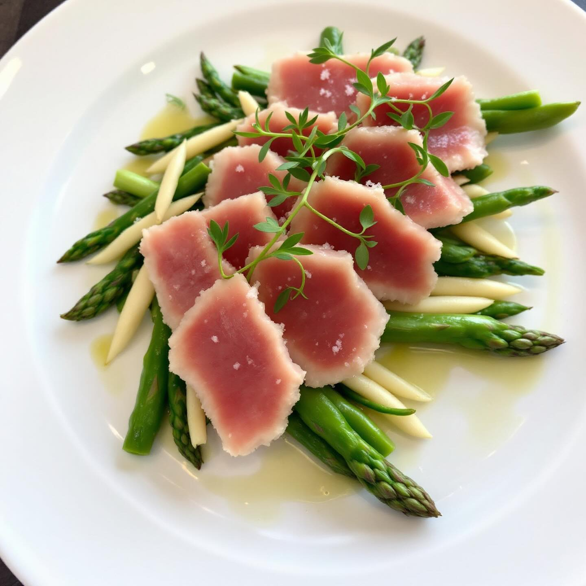
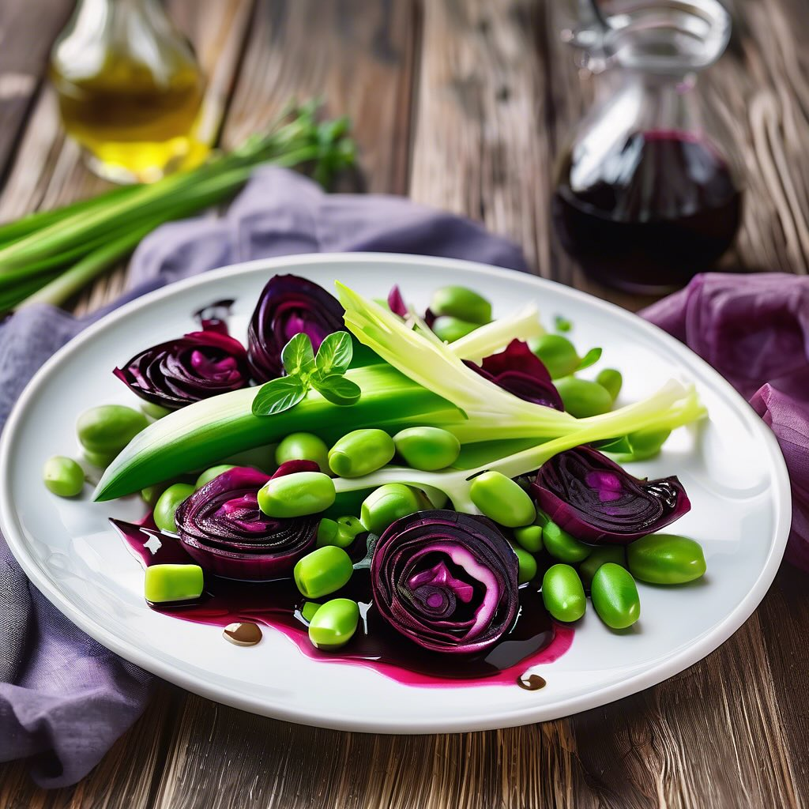

🫘 Leguminando
Ricette di stagione a base di legumi

🌸 Primavera
Fave, asparagi, piselli e legumi freschi. Il risveglio della natura nel piatto.
175 ricette
☀️ Estate
Insalate fresche, hummus freddi e piatti leggeri per le giornate calde.
92 ricette
🍂 Autunno
Zucche, funghi porcini, castagne e zuppe calde per i primi freddi.
147 ricette
❄️ Inverno
Zuppe nutrienti, stufati ricchi e comfort food per le giornate più lunghe.
60 ricette